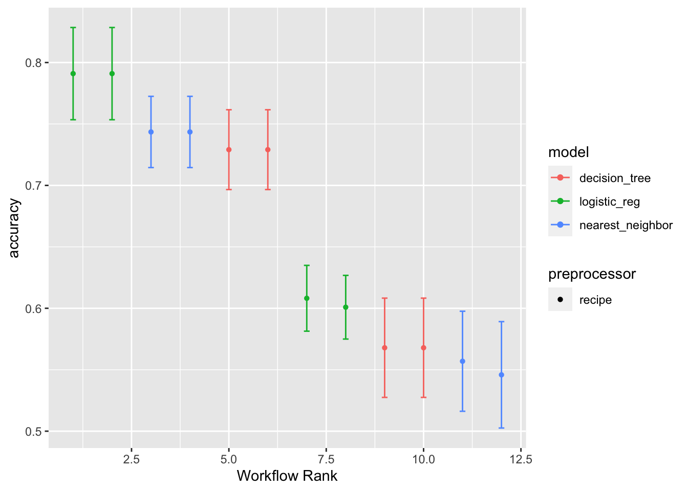

library(tidyverse)
library(tidymodels)
library(here)Cross-Validation and Tuning
Setup
Data
In the previous work, we started with ha_1, and then ha_2 magically appeared for us to evaluate our model!
Of course, this is because I randomly “hid” half the data from you, in ha_2, before we started.
Now we’ll see how one would go about the model selection process starting from all the data:
ha <- read_csv(here("Data", "ha_all.csv")) %>%
mutate(
cp = factor(cp),
sex = factor(sex),
restecg = factor(restecg),
diagnosis = factor(diagnosis)
) %>%
drop_na()Rows: 273 Columns: 9
── Column specification ────────────────────────────────────────────────────────
Delimiter: ","
chr (2): Name, diagnosis
dbl (7): age, sex, cp, trtbps, chol, restecg, thalach
ℹ Use `spec()` to retrieve the full column specification for this data.
ℹ Specify the column types or set `show_col_types = FALSE` to quiet this message.Recipes and Specs
Copy over your recipe and specification setup code from the last notebook.
lr_spec <- logistic_reg()
dt_spec <- decision_tree() %>%
set_mode("classification")
knn_spec <- nearest_neighbor(neighbors = 10) %>%
set_mode("classification")rec_1 <- recipe(diagnosis ~ age + chol,
data = ha)
rec_2 <- rec_1 %>%
step_log(chol)
rec_3 <- recipe(diagnosis ~ .,
data = ha) %>%
update_role(Name,
new_role = "ID") %>%
step_dummy(cp) %>%
step_dummy(sex) %>%
step_dummy(restecg)
rec_4 <- rec_3 %>%
step_normalize(trtbps)
Tip
Don’t forget to replace data = ha_1 with data = ha. In principle this doesn’t really matter - the data isn’t being used in the recipe function, it is only showing the structure of the dataset.
But we no longer have an object named ha_1 in this notebook!
Cross-Validation
Recall that our process for evaluating the accuracy of a particular workflow went like this:
- Fit the workflow to some training data.
- Predict values for a separate set of test data.
- Calculate the accuracy metric for those predictions.
Previously we just did this for one possible test-training split. But what if we wanted to try the whole process on many different splits?
And what if we could combine all those steps automatically with one function???
First, let’s remake a workflow:
wflow_lr <- workflow() %>%
add_model(lr_spec) %>%
add_recipe(rec_3)Then, let’s establish some splits:
ha_cv <- vfold_cv(ha, v = 5)
ha_cv# 5-fold cross-validation
# A tibble: 5 × 2
splits id
<list> <chr>
1 <split [218/55]> Fold1
2 <split [218/55]> Fold2
3 <split [218/55]> Fold3
4 <split [219/54]> Fold4
5 <split [219/54]> Fold5Then, tidymodels lets us do everything in one function:
cv_results <- wflow_lr %>%
fit_resamples(ha_cv,
metrics = metric_set(accuracy))A lot is happening in those two lines of code! Let’s recap the process:
From the first fold in
ha_cv, take only the 218 samples in the training split. Fit thewflow_lrworkflow on these.From the first fold in
ha_cv, take only the 55 test samples. Use the fitted workflow to predict diagnoses of these.Calculate the
accuracyof the predictions on the 55 test samples.Repeat 1-3 for the other folds in
ha_cv.Take the average of the 5 accuracies calculated.
Finally, we are left with one single number, the average of the five cross-validated accuracies, measuring the “success” of the workflow:
cv_results %>% collect_metrics()# A tibble: 1 × 6
.metric .estimator mean n std_err .config
<chr> <chr> <dbl> <int> <dbl> <chr>
1 accuracy binary 0.791 5 0.0228 Preprocessor1_Model1Workflow Sets
Let’s recap the number of options for modeling process that we have given ourselves in this short time:
- Four different recipes
- Three different models specs
If we tried every possible combination of options, we would have to fit 12 models.
Instead of typing each one up by hand, we can tell tidymodels to make us a set of workflows, and then apply cross-validation to all of the options.
ha_models <-
workflow_set(
models = list(LogReg = lr_spec,
KNN = knn_spec,
DecTree = dt_spec),
preproc = list(simple = rec_1,
simple_log = rec_2,
full = rec_3,
full_plus = rec_4),
cross = TRUE
)A few things to note in this code:
The recipe objects and specification objects were created earlier. There’s no shortcut around this - you always need to make those decisions manually!
We gave all our recipes and specifications descriptive names, to help us differentiate them later.
We set
cross = TRUE, meaning that all possible recipe/spec combos will be tried.
More information and examples about workflowsets can be found at: https://workflowsets.tidymodels.org/
Once we have a workflowset, we can automatically compare all our options at once:
results <- ha_models %>%
workflow_map("fit_resamples",
resamples = ha_cv,
metrics = metric_set(accuracy))
results# A workflow set/tibble: 12 × 4
wflow_id info option result
<chr> <list> <list> <list>
1 simple_LogReg <tibble [1 × 4]> <opts[2]> <rsmp[+]>
2 simple_KNN <tibble [1 × 4]> <opts[2]> <rsmp[+]>
3 simple_DecTree <tibble [1 × 4]> <opts[2]> <rsmp[+]>
4 simple_log_LogReg <tibble [1 × 4]> <opts[2]> <rsmp[+]>
5 simple_log_KNN <tibble [1 × 4]> <opts[2]> <rsmp[+]>
6 simple_log_DecTree <tibble [1 × 4]> <opts[2]> <rsmp[+]>
7 full_LogReg <tibble [1 × 4]> <opts[2]> <rsmp[+]>
8 full_KNN <tibble [1 × 4]> <opts[2]> <rsmp[+]>
9 full_DecTree <tibble [1 × 4]> <opts[2]> <rsmp[+]>
10 full_plus_LogReg <tibble [1 × 4]> <opts[2]> <rsmp[+]>
11 full_plus_KNN <tibble [1 × 4]> <opts[2]> <rsmp[+]>
12 full_plus_DecTree <tibble [1 × 4]> <opts[2]> <rsmp[+]>results %>% rank_results()# A tibble: 12 × 9
wflow_id .config .metric mean std_err n preprocessor model rank
<chr> <chr> <chr> <dbl> <dbl> <int> <chr> <chr> <int>
1 full_plus_LogReg Prepro… accura… 0.791 0.0228 5 recipe logi… 1
2 full_LogReg Prepro… accura… 0.791 0.0228 5 recipe logi… 2
3 full_plus_KNN Prepro… accura… 0.744 0.0176 5 recipe near… 3
4 full_KNN Prepro… accura… 0.744 0.0176 5 recipe near… 4
5 full_plus_DecTr… Prepro… accura… 0.729 0.0197 5 recipe deci… 5
6 full_DecTree Prepro… accura… 0.729 0.0197 5 recipe deci… 6
7 simple_log_LogR… Prepro… accura… 0.608 0.0163 5 recipe logi… 7
8 simple_LogReg Prepro… accura… 0.601 0.0158 5 recipe logi… 8
9 simple_DecTree Prepro… accura… 0.568 0.0246 5 recipe deci… 9
10 simple_log_DecT… Prepro… accura… 0.568 0.0246 5 recipe deci… 10
11 simple_KNN Prepro… accura… 0.557 0.0247 5 recipe near… 11
12 simple_log_KNN Prepro… accura… 0.546 0.0263 5 recipe near… 12results %>% autoplot()
Exercises
- Based on the above output, what model would you choose to put into production?
Logistic regression with recipe 3
- Suppose you wanted to study the metric ROC-AUC (
roc_aucintidymodels) instead of accuracy. What would you need to change in the above code?
results <- ha_models %>%
workflow_map("fit_resamples",
resamples = ha_cv,
metrics = metric_set(roc_auc))- It seems like workflowsets makes it easy to try many different specs and recipes. What drawbacks do you see to trying more options?
Just that it takes energy to create the recipes, and it takes computer time to run all the many cross-validations.
Tuning
If it already feels like we have a lot of model options to try, buckle up, because we have one final complication to add.
Remember how we chose, for KNN, to use 10 as our number of neighbors?
Well, what if we would have better prediction results with a different value of K?
Just as we used cross-validated accuracy to decide on our best workflow, we can also try many different variants of the KNN model specification and compare those.
We start by creating a specification that doesn’t commit to a value of neighbors - instead, it plans to tune that parameter.
knn_tune_spec <- nearest_neighbor(neighbors = tune()) %>%
set_mode("classification")Next, we make a workflow using our best recipe:
wflow_knn_tune <- workflow() %>%
add_model(knn_tune_spec) %>%
add_recipe(rec_3)Finally, we decide what possible values of neighbors we are willing to consider.
k_vals <- tibble(
neighbors = 2:50
)
k_vals# A tibble: 49 × 1
neighbors
<int>
1 2
2 3
3 4
4 5
5 6
6 7
7 8
8 9
9 10
10 11
# ℹ 39 more rows
Warning
The name of the data frame can be anything, but the name of the column containing values to use must be the same as the name of the input to the tidymodels function, i.e., neighbors.
There are some shortcuts in tidymodels for choosing reasonable possible values.
See this tutorial for a deeper treatment: https://www.tidymodels.org/start/tuning/
Now, we are ready to let tidymodels do everything for us!
tune_results <- wflow_knn_tune %>%
tune_grid(
resamples = ha_cv,
grid = k_vals,
metrics = metric_set(accuracy)
)This process is just like workflow sets. A cross-validation is being performed for each of the possible workflows: the one with neighbors = 2, the one with neighbors = 3, …
tune_results %>%
collect_metrics() %>%
slice_max(mean)# A tibble: 1 × 7
neighbors .metric .estimator mean n std_err .config
<int> <chr> <chr> <dbl> <int> <dbl> <chr>
1 12 accuracy binary 0.751 5 0.0191 Preprocessor1_Model11Exercises
- What value of
neighborsresults in the best ROC-AUC score?
35, 36, and 40 were all tied
- What parameters in the decision tree model are available to be tuned?
(If you’re feeling ambitious, try one out!)
cost_complexity,tree_depth, andmin_n
dt_tune_spec <- decision_tree(cost_complexity = tune()) %>%
set_mode("classification")
wflow_dt_tune <- workflow() %>%
add_model(dt_tune_spec) %>%
add_recipe(rec_3)cc_vals <- grid_regular(cost_complexity(),
levels = 10)
cc_vals# A tibble: 10 × 1
cost_complexity
<dbl>
1 0.0000000001
2 0.000000001
3 0.00000001
4 0.0000001
5 0.000001
6 0.00001
7 0.0001
8 0.001
9 0.01
10 0.1 tune_results <- wflow_dt_tune %>%
tune_grid(
resamples = ha_cv,
grid = cc_vals,
metrics = metric_set(accuracy)
)
tune_results %>%
collect_metrics() %>%
slice_max(mean)# A tibble: 1 × 7
cost_complexity .metric .estimator mean n std_err .config
<dbl> <chr> <chr> <dbl> <int> <dbl> <chr>
1 0.01 accuracy binary 0.729 5 0.0197 Preprocessor1_Model09- Is there any value of
neighborsfor with the KNN workflow is better than our “best” workflow from earlier, the logistic regression?
No, the max accuracy achieved was 0.74, and our logistic regression achieved 0.78.
Tip
It is possible to embed the tuning process inside workflowsets, and run all your options together. However, this is a bit more complicated, and only worth your effort to learn if you find yourself doing a large amount of tuning and many different model types and recipes.
- How many times was a model fit when the chunk below was run?
tune_results <- wflow_knn_tune %>%
tune_grid(
resamples = ha_cv,
grid = k_vals,
metrics = metric_set(accuracy)
)245 times! There were 49 different workflows (i.e. different values of
neighbors), and for each one, we fit the model on each of 5 training sets from the cross-validation folds.